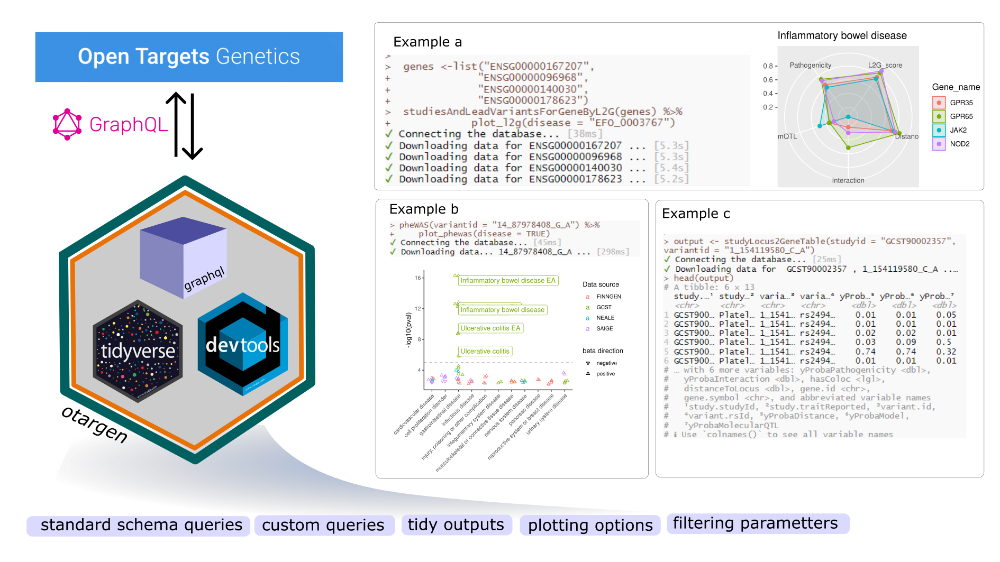

otargen is an open-source and freely available R package that facilitates data retrieval and analysis from Open Target Genetics portal in the R programming environment. otargen functions cover all the GraphQL query types in Open Target Genetics schema, and return tidy data tables. It also includes several useful plotting functions to help visualize and gain insight from core complex data tables.
<<<<<<< HEAD

Installation
You can install the development version of otargen as follows:
devtools::install_github("amirfeizi/otargen")- Install latest development version from GitHub (requires devtools package):
if (!require("devtools")) {
install.packages("devtools")
}
devtools::install_github("https://github.com/amirfeizi/otargen.git")
=======
`otargen` is an open-source and freely available R package that facilitates data retrieval
and analysis from Open Target Genetics portal in the R programming environment. `otargen` functions
cover all the GraphQL query types in Open Target Genetics schema, and return tidy data tables. It
also includes several useful plotting functions to help visualize and gain insight from core complex
data tables.

## Installation
You can install the development version of otargen as follows:
``` r
install.packages("otargen")Example
Given below are a few examples on how to use the functions in the package:
library(otargen)
colocalisationsForGene(genes=list("ENSG00000163946","ENSG00000169174", "ENSG00000143001"))
studiesAndLeadVariantsForGeneByL2G(genes = "PCSK9", l2g = 0.6, pvalue = 1e-8, vtype = c("intergenic_variant", "intron_variant"))
gwasCredibleSet(studyid="GCST90002357", variantid="1_154119580_C_A")
get_genes(chromosome = "2", start = 239634984, end = 241634984)
topOverlappedStudies(studyid = "NEALE2_6177_1", pageindex = 1, pagesize = 50)
qtlCredibleSet(studyid="Braineac2", variantid="rs7552841", gene="PCSK9", biofeature="SUBSTANTIA_NIGRA")
manhattan(studyid = "GCST003044") %>% otargen::plot_manhattan()
pheWAS(variantid = "14_87978408_G_A") %>% otargen::plot_phewas(disease = TRUE)
>>>>>>> e29a866ac4c36c9abaf6fa30b55ebaa1443d4bc0